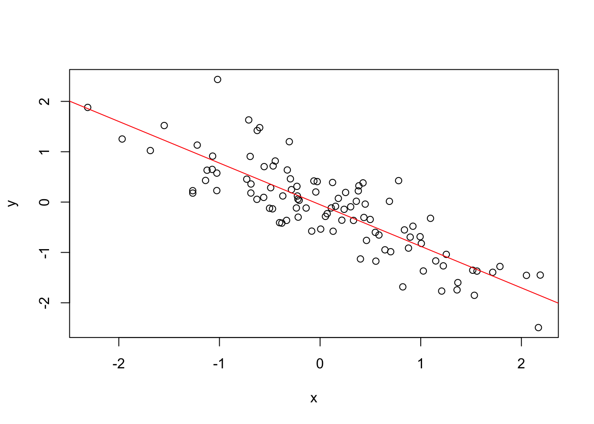
Week 8: Regression Analysis
KIN 610 - Spring 2023
Credits
Navarro and Foxcroft (2022)
Simple Linear Regression
Linear Regression Models
- A way of measuring the relationship between two variables
- Similar to Pearson correlation, but more powerful
- Can be used to predict one variable from another
Example: Parenthood Data Set
- Data set contains measures of sleep and grumpiness for Dani
- Hypothesis: less sleep leads to more grumpiness
- Scatterplot shows a strong negative correlation (r = -.90)
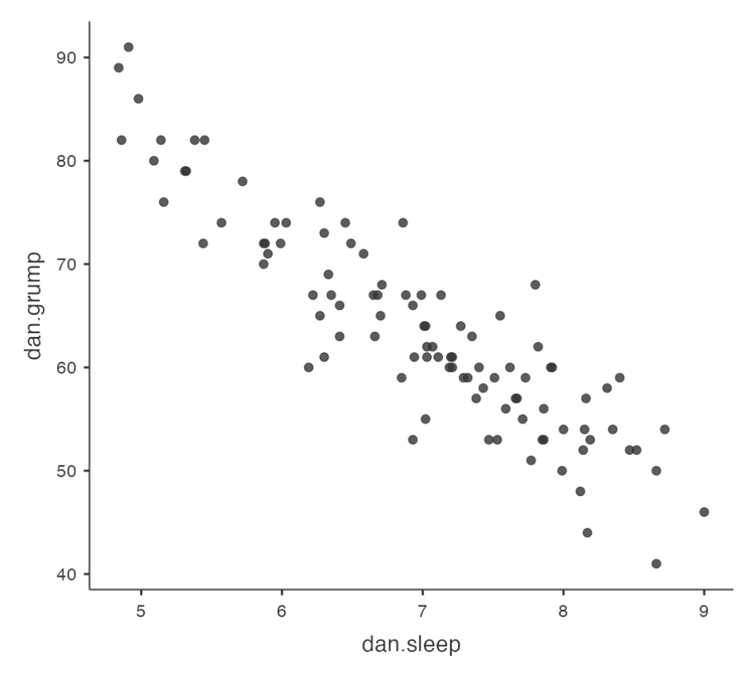
Regression Line
- A straight line that best fits the data
- Represents the average relationship between the variables
- Can be used to estimate grumpiness from sleep
How to Draw a Regression Line?
The line should go through the middle of the data
The line should minimize the vertical distances between the data points and the line
The line should have a slope and an intercept that can be calculated from the data
The formula for a straight line
Usually written like this: \(y = a + bx\)
Two variables: \(x\) and \(y\)
Two coefficients: \(a\) and \(b\)
Coefficient \(a\) represents the
y-interceptof the lineCoefficient \(b\) represents the
slopeof the line
The interpretation of intercept and slope
- Intercept: the value of \(y\) that you get when \(x\) = 0
- Slope: the change in \(y\) that you get when you increase \(x\) by 1 unit
- Positive slope: \(y\) goes up as \(x\) goes up
- Negative slope: \(y\) goes down as \(x\) goes up
The formula for a Regression line
Same as the formula for a
straight line, but with someextra notationSo if \(y\) is the outcome variable (DV) and \(x\) is the predictor variable (IV), then:
\[\hat{y}_i = b_0 + b_1 x_i\]
\(\hat{y}_i\): the predicted value of the outcome variable (\(y\)) for observation \(i\)
\({y}_i\): the actual value of the outcome variable (\(y\)) for observation \(i\)
\({x}_i\): the value of the predictor variable (\(x\)) for observation \(i\)
\({b}_0\): the estimated intercept of the regression line
\({b}_1\): the estimated slope of the regression line
xi is the value of the predictor variable (#of hours on day 1) and yi is the corresponding value of the outcome variable (grumpiness on that day) - works for all observations.
The assumptions of the regression model
We assume that the formula works for all observations in the data set (i.e., for all i)
We distinguish between the actual data \({y}_i\) and the estimate \(\hat{y}_i\) (i.e., the prediction that our regression line is making)
We use \(b_0\) and \(b_1\) to refer to the coefficients of the regression model
\(b_0\): the estimated intercept of the regression line
\(b_1\): the estimated slope of the regression line
Residuals of the Regression model
# Generate some example data with a strong negative correlation
set.seed(123)
x <- rnorm(100)
y <- -0.8*x + rnorm(100, sd=0.5)
# Plot the data
plot(x,y)
# Add the best fit line
abline(lm(y ~ x), col="red")
Now, we have the complete linear regression model
\[\hat{y}_i = b_0 + b_1 x_i + {e}_i\]
The data do not fall perfectly on the regression line
The difference between the model prediction and that actual data point is called a residual, and we refer to it as \({e}_i\)
Mathematically, the residuals are defined as \({e}_i = {y}_i - \hat{y}_i\)
The residuals measure how well the regression line fits the data
- Smaller residuals: better fit
- Larger residuals: worse fit
Estimating a linear regression model
We want to find the regression line that fits the data best
We can measure how well the regression line fits the data by looking at the residuals
The residuals are the differences between the actual data and the model predictions
Smaller residuals mean better fit, larger residuals mean worse fit
Ordinary least squares regression
We use the method of
least squaresto estimate theregression coefficientsThe regression coefficients are estimates of the population parameters
We use \(\hat{b}_0\) and \(\hat{b}_1\) to denote the estimated coefficients
Ordinary least squares (OLS) regression is the most common way to estimate a linear regression model
How to find the estimated coefficients
There are formulas to calculate \(\hat{b}_0\) and \(\hat{b}_1\) from the data
The formulas involve some algebra and calculus that are not essential to understand the logic of regression
We can use jamovi to do all the calculations for us
jamovi will also provide other useful information about the regression model
Linear Regression in jamovi
- We can use jamovi to estimate a linear regression model from the data
- We need to specify the
dependent variableand thecovariate(s)in the analysis - jamovi will output the estimated coefficients and other statistics
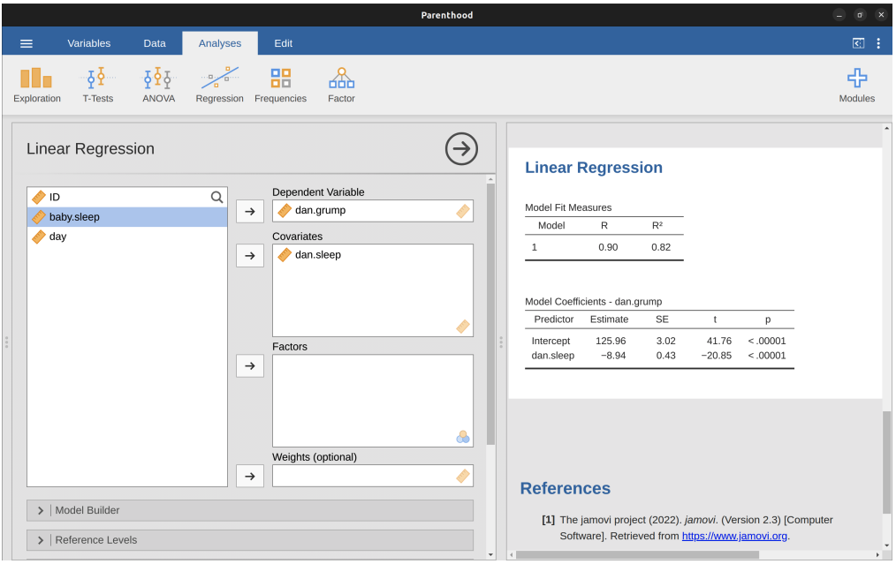
Example: Parenthood data
Data file: parenthood.csv (found in module lsj data in jamovi)
Dependent variable: dani.grump (Dani’s grumpiness)
Covariate: dani.sleep (Dani’s hours of sleep)
Estimated intercept: \(\hat{b}_0\) = 125.96
Estimated slope: \(\hat{b}_1\) = -8.94
Regression equation: \(\hat{Y}_i = 125.96+(-8.94 X_i)\)
Interpreting the estimated model
- We need to understand what the estimated coefficients mean
- The slope \(\hat{b}_1\) tells us how much the
dependent variablechanges when thecovariateincreases by one unit - The intercept \(\hat{b}_0\) tells us what the expected value of the
dependent variableis when thecovariateis zero
Example: Parenthood data
- Dependent variable:
dani.grump(Dani’s grumpiness) - Covariate:
dani.sleep(Dani’s hours of sleep) - Estimated slope: \(\hat{b}_1\) = -8.94
- Interpretation: Each additional hour of sleep
reducesgrumpiness by8.94points
- Interpretation: Each additional hour of sleep
- Estimated intercept: \(\hat{b}_0\) = 125.96
- Interpretation: If Dani gets zero hours of sleep, her grumpiness will be
125.96points
- Interpretation: If Dani gets zero hours of sleep, her grumpiness will be
Multiple Regression
Introduction
We can use more than one
predictor variableto explain the variation in theoutcome variable- Add more terms to our regression equation to represent each predictor variable
Each term has a coefficient that indicates how much the outcome variable changes when that predictor variable increases by one unit
Example: Parenthood data
Outcome variable:
dani.grump(Dani’s grumpiness)Predictor variables:
dani.sleep(Dani’s hours of sleep) andbaby.sleep(Baby’s hours of sleep)
Regression equation: \(Y_i=b_0+b_1X_{i1}+b_2X_{i2}+\epsilon_i\)
\(Y_i\): Dani’s grumpiness on day \(i\)
\(X_{i1}\): Dani’s hours of sleep on day \(i\)
\(X_{i2}\): Baby’s hours of sleep on day \(i\)
\(b_0\): Intercept
\(b_1\): Coefficient for Dani’s sleep
\(b_2\): Coefficient for Baby’s sleep
\(\epsilon_i\): Error term on day \(i\)
Estimating the coefficients in multiple regression
- We want to find the coefficients that minimize the sum of squared residuals
- Residuals are the differences between the observed and predicted values of the outcome variable
- We use a similar method as in
simple regression, but withmore terms in the equation
Doing it in jamovi
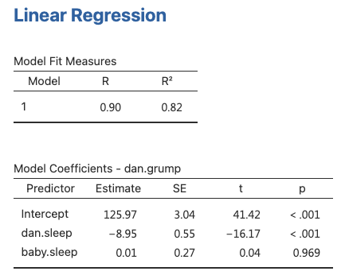
- jamovi can estimate multiple regression models easily
- We just need to add more variables to the
Covariatesbox in the analysis - jamovi will output the estimated coefficients and other statistics for each predictor variable
- The Table shows the coefficients for dani.sleep and baby.sleep as predictors of dani.grump
Interpreting the coefficients in multiple regression
- The coefficients tell us how much the
outcome variablechanges whenone predictor variableincreases by one unit,holdingthe other predictor variablesconstant - The
largerthe absolute value of the coefficient, thestrongerthe effect of that predictor variable on the outcome variable - The sign of the coefficient indicates whether the effect is positive or negative
Example: Parenthood data
Coefficient (slope) for dani.sleep:
-8.94- Interpretation: Each additional hour of sleep
reducesDani’s grumpiness by8.94 points, regardless of how much sleep the baby gets
- Interpretation: Each additional hour of sleep
Coefficient (slope) for baby.sleep: 0.01
- Interpretation: Each additional hour of sleep for the baby
increasesDani’s grumpiness by0.01 points, regardless of how much sleep Dani gets
- Interpretation: Each additional hour of sleep for the baby
Quantifying the fit of the regression model
We want to know how well our regression model predicts the outcome variable
We can compare the predicted values ( \(\hat{Y}_i\) ) to the observed values ( \(Y_i\) ) using two sums of squares
Residualsum of squares ( \(SS_{res}\) ): measures how much error there is in our predictionsTotalsum of squares ( \(SS_{tot}\) ): measures how much variability there is in the outcome variable
The \(R^2\) value (effect size)
The \(R^2\) value is a proportion that tells us how much of the
variabilityin theoutcome variableis explained by ourregression modelIt is calculated as:
\[R^2=1-\frac{SS_{res}}{SS_{tot}}\]
It ranges from 0 to 1, with
highervalues indicatingbetter fitIt can be interpreted as the
percentage of variance explained by our regression model
The relationship between regression and correlation
Regression and correlation are both ways of measuring the strength and direction of a linear relationship between two variables
For a
simple regressionmodel with one predictor variable, the \(R^2\) value isequalto the square of the Pearson correlation coefficient (\(r^2\))- Running a Pearson correlation is equivalent to running a simple linear regression model
The adjusted \(R^2\) value
- The adjusted \(R^2\) value is a modified version of the \(R^2\) value that takes into account the number of predictors in the model
- The adjusted \(R^2\) value adjusts for the degrees of freedom in the model
- It increases only
if adding a predictorimproves the model more than expected by chance
Which one to report: \(R^2\) or adjusted \(R^2\)?
- There is no definitive answer to this question
- It depends on your preference and your research question
- Some factors to consider are:
Interpretability: \(R^2\) is easier to understand and explain
Bias correction: Adjusted \(R^2\) is less likely to overestimate the model performance
Hypothesis testing: There are other ways to test if adding a predictor improves the model significantly
Hypothesis tests for regression models
- We can use hypothesis tests to evaluate the
significanceof our regression model and itscoefficients - There are two types of hypothesis tests for regression models:
Testing the
model as a whole: Is there any relationship between the predictors and the outcome?Testing a
specific coefficient: Is a particular predictor significantly related to the outcome?
Test the model as a whole
\(H_0\): there is no relationship between the predictors and the outcome
\(H_a\): data follow the regression model
\[F=\frac{(R^2/K)}{(1-R^2)/(N-K-1)}\]
- where \(R^2\) is the proportion of variance explained by our model, \(K\) is the number of predictors, and \(N\) is the number of observations
- The F-test statistic follows an F-distribution with \(K\) and \(N-K-1\) degrees of freedom
- We can use a
p-valueto determine if our F-test statisticis significant - jamovi can do this for us!
Tests for Individual Coefficients
The F-test checks if the model as a whole is performing better than chance
If the F-test is not significant, then the regression model may not be good
However, passing the F-test does not imply that the model is good
Example of Multiple Linear Regression
In a multiple linear regression model with baby.sleep and dani.sleep as predictors:
The estimated regression coefficient for baby.sleep is small (0.01) compared to dani.sleep (-.8.95)
This suggests that only dani.sleep matters in predicting grumpiness
Hypothesis Testing for Regression Coefficients
- A t-test can be used to test if a regression coefficient is significantly different from zero
\(H_0\): b = 0 (the true regression coefficient is zero)
\(H_0\): b ≠ 0 (the true regression coefficient is not zero)
Running Hypothesis Tests in Jamovi
To compute statistics, check relevant options and run regression in jamovi
See result in the next slide
Output
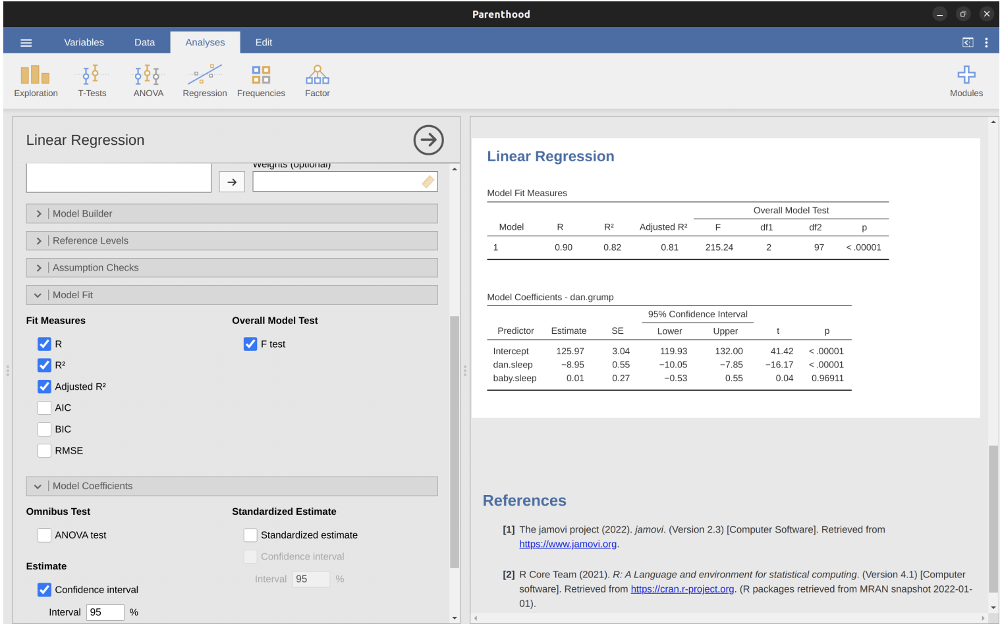
Model Coefficients
- Located at bottom of jamovi analysis results
- Each row refers to one coefficient in regression model
- First row is intercept term; later rows look at each predictor
Coefficient Information
- First column: estimate of b
- Second column: standard error estimate
- Third and fourth columns: lower and upper values for 95% confidence interval around b estimate
- Fifth column: t-statistic ( \(t = b / se(b)\) )
- Last column: p-value for each test
Degrees of Freedom
- Not listed in coefficients table itself
- Always N - K - 1
- Listed in table at top of output
Interpretation
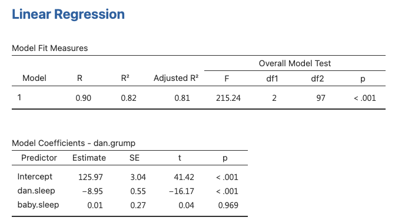
Conclusion
- The current regression model may not be the best fit for the data
- Dropping
baby.sleeppredictor entirely mayimprovethe model
- The model performs significantly better than chance
\(F(2,97) = 215.24\), \(p< .001\)
\(R^2 = .81\) value indicates that the regression model accounts for 81% of the variability in the outcome measure
- Individual Coefficients
baby.sleepvariable has no significant effectAll work in this model is being done by the
dani.sleepvariable
Assumptions of Regression
The linear regression model relies on several assumptions.
Linearity: The relationship between X and Y is assumed to be linear.
Independence: Residuals are assumed to be independent of each other.
Normality: The residuals are assumed to be normally distributed.
Equality of Variance: The standard deviation of the residual is assumed to be the same for all values of Y-hat.
Assumptions of Regression, cont.
Also…
Uncorrelated Predictors: In a multiple regression model, predictors should not be too strongly correlated with each other.
- Strongly correlated predictors (collinearity) can cause problems when evaluating the model.
No “Bad” Outliers: The regression model should not be too strongly influenced by one or two anomalous data points.
- Anomalous data points can raise questions about the adequacy of the model and trustworthiness of data.
Diagnostics
Checking for linearity
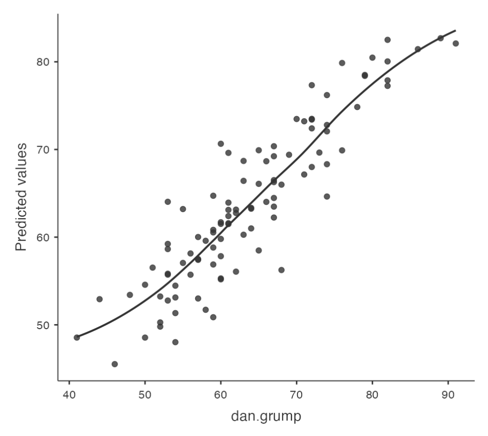
Checking Linearity
- It is important to check for the linearity of relationships between predictors and outcomes.
Plotting Relationships
- One way to check for linearity is to plot the relationship between
predictedvalues andobservedvalues for the outcome variable.
Using Jamovi
- In Jamovi, you can save predicted values to the dataset and then draw a scatterplot of observed against predicted (fitted) values.
Interpreting Results
- If the plot looks approximately linear, then it suggests that your model is not doing too badly. However, if there are big departures from linearity, it suggests that changes need to be made.
Checking for linearity, cont.
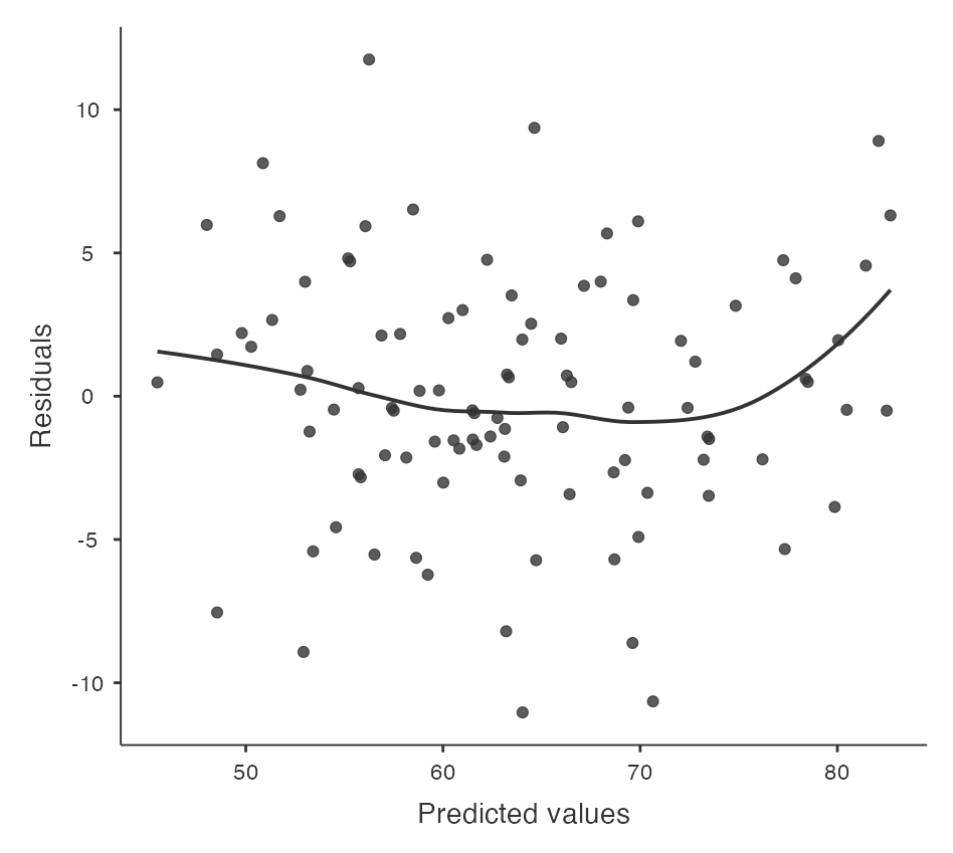
To get a more detailed picture of linearity, it can be helpful to look at the relationship between predicted values and residuals.
Using Jamovi
- In Jamovi, you can save r
esidualsto the dataset and then draw a scatterplot ofpredictedvalues againstresidual values.
Interpreting Results
- Ideally, the relationship between predicted values and residuals should be a straight, perfectly horizontal line. In practice, we’re looking for a reasonably straight or flat line. This is a matter of judgement.
Checking for normality (residuals)
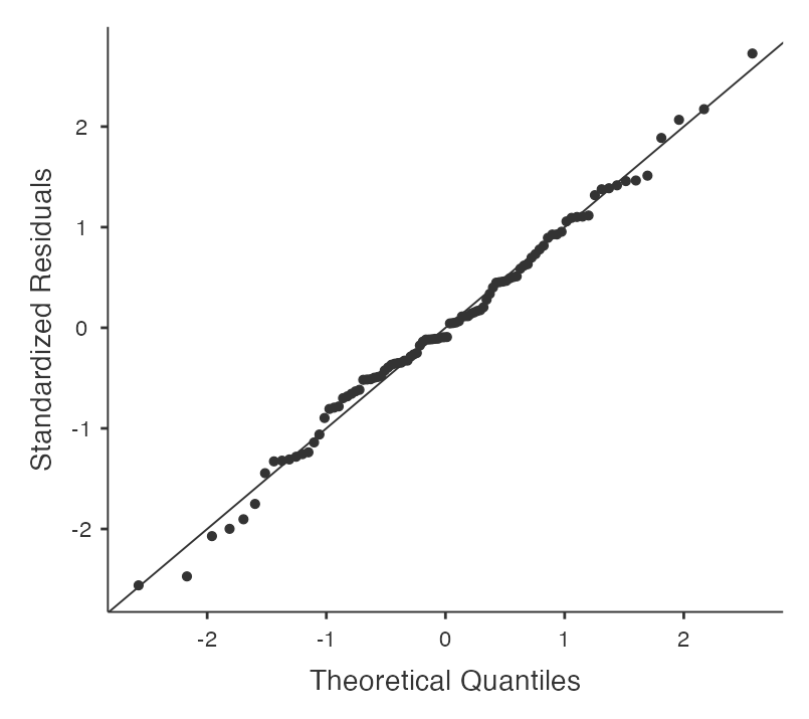
Regression models rely on a normality assumption: the residuals should be normally distributed.
Using Jamovi
- In Jamovi, you can draw a QQ-plot via the ‘Assumption Checks’ - ‘Assumption Checks’ - ‘Q-Q plot of residuals’ option.
Interpreting Results
- The output shows the standardized residuals plotted as a function of their theoretical quantiles according to the regression model. The dots should be somewhat near the line.
Checking for normality (residuals), cont.
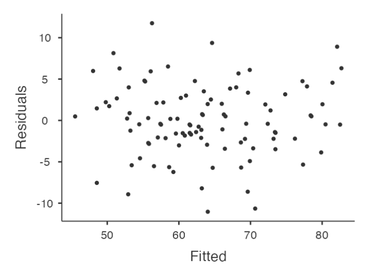
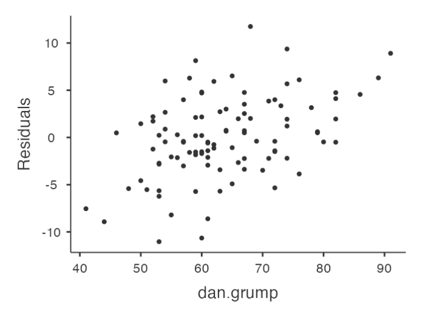
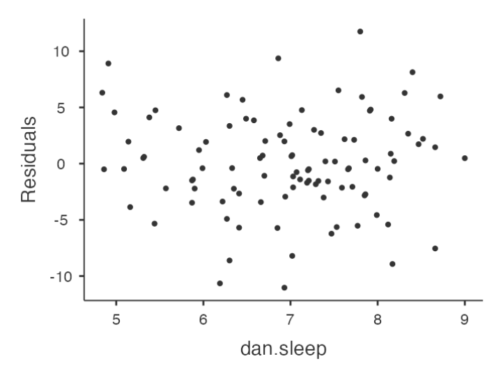
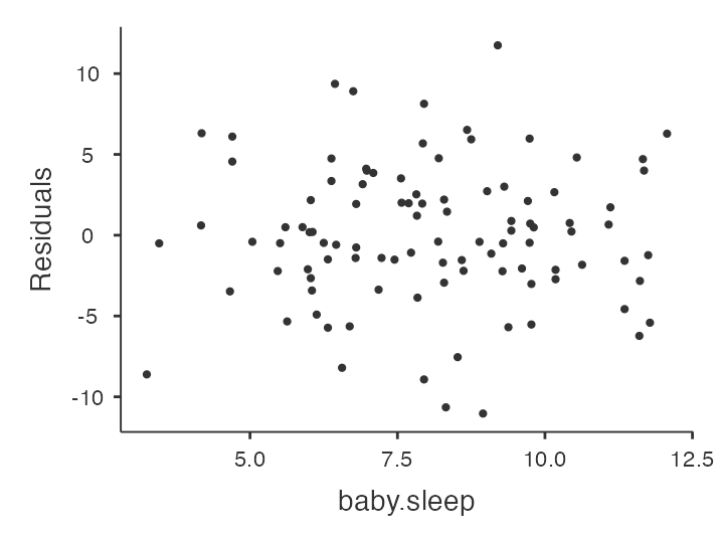
Checking Relationship between Predicted Values and Residuals
- In Jamovi, you can use the ‘Residuals Plots’ option to check the relationship between predicted values and residuals.
- The output provides a scatterplot for each
predictor variable, theoutcome variable, and thepredicted valuesagainst residuals.
Interpreting Results
We are looking for a fairly uniform distribution of dots with no clear bunching or patterning.
- The dots are fairly evenly spread across the whole plot
Issues with the relationship between predicted values and residuals?
- Transform one or more of the variables (Box-Cox Transform in jamovi)
Checking for equality of variance
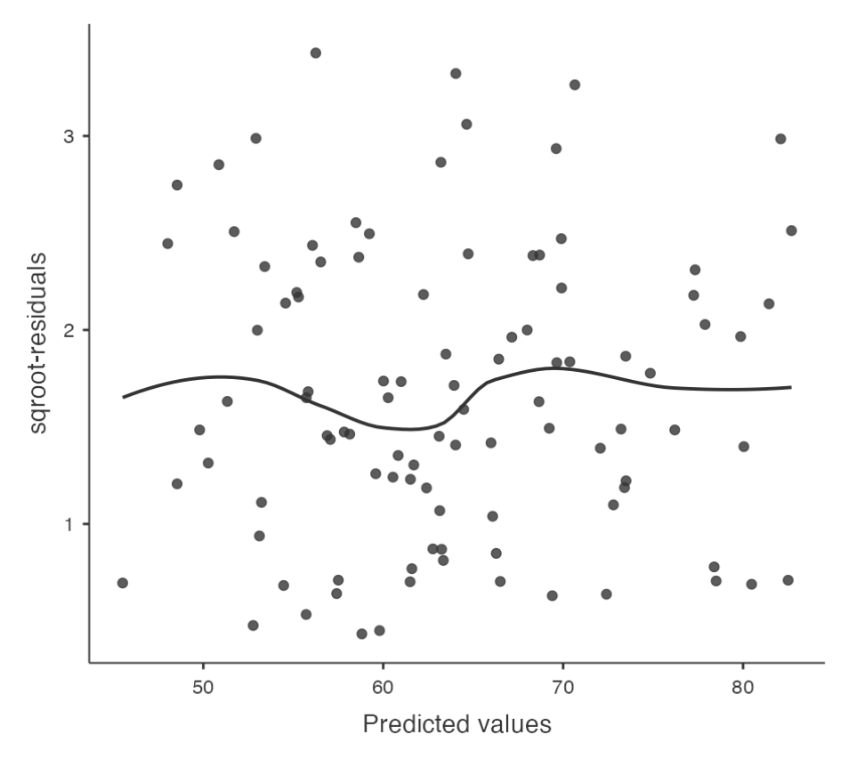
Regression models make an assumption of equality (homogeneity) of variance.
- This means that the variance of the residuals is assumed to be constant.
Plotting Equality of Variance in Jamovi
- To check this assumption in Jamovi, first calculate the square root of the absolute size of the residual.
- Compute this new variable using the formula
SQRT(ABS(Residuals))
- Compute this new variable using the formula
- Then plot this against the predicted values.
- The plot should show a straight horizontal line running through the middle.
Checking for Collineary
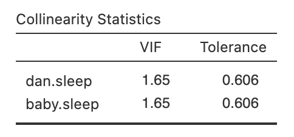
- Variance Inflation Factors (VIFs) can be used to determine if predictors in a regression model are too highly correlated with each other.
- Each predictor has an associated VIF.
- In Jamovi, click on the ‘Collinearity’ checkbox in the ‘Regression’ - ‘Assumptions’ options to see VIF values.
- Interpreting VIF
- A VIF of 1 means no correlation among the predictor and the remaining predictor variables
- VIFs exceeding 4 warrant further investigation
- VIFs exceeding 10 are signs of serious multicollinearity requiring correction
Checking for outliers
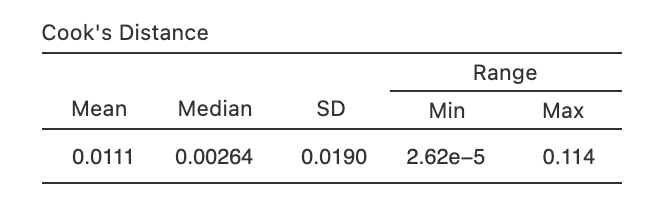
- Used in regression analysis to identify influential data points that may negatively affect your regression model
- Datasets with a large number of highly influential points might not be suitable for linear regression without further processing such as outlier removal or imputation
- Identifying Outliers
- A general rule of thumb: Cook’s distance greater than 1 is often considered large
- What if the value is greater than 1?
remove the outlier and run the regression again
How? In jamovi you can save the Cook’s distance values to the dataset, then draw a boxplot of the Cook’s distance values to identify the specific outliers.